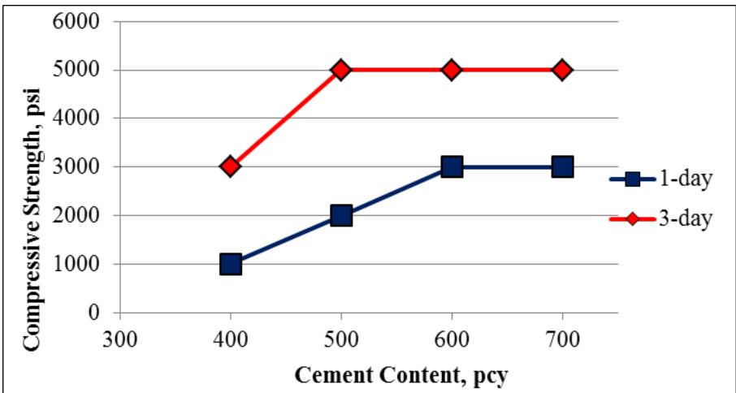
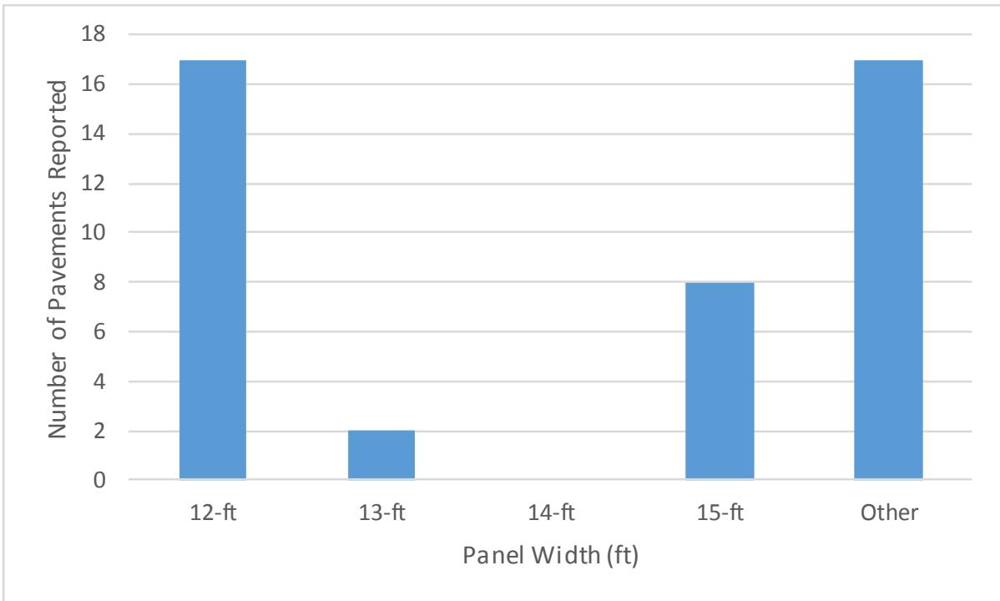
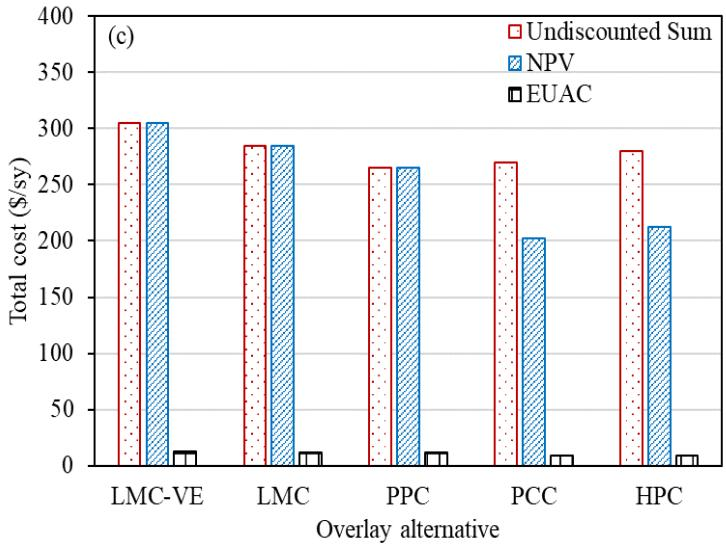
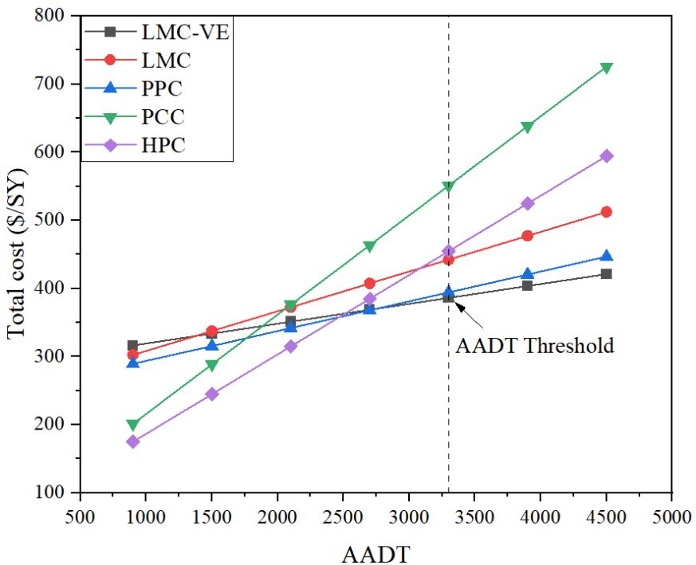
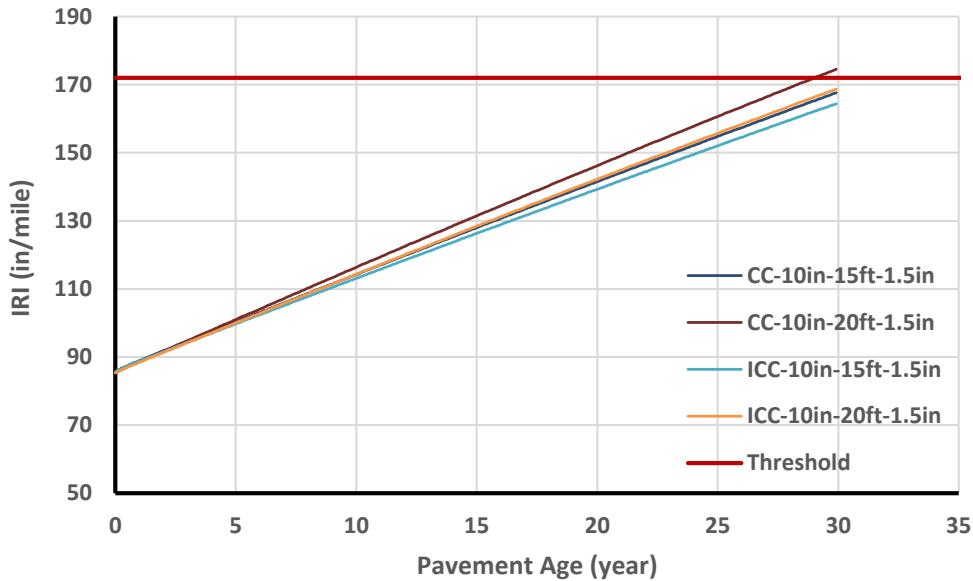
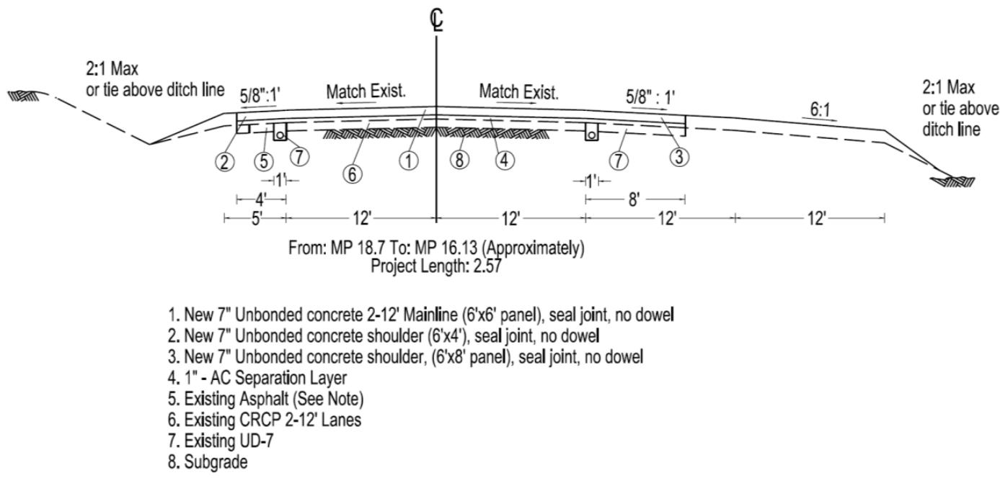
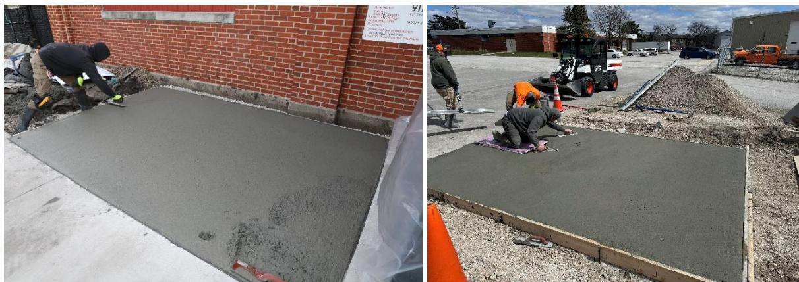
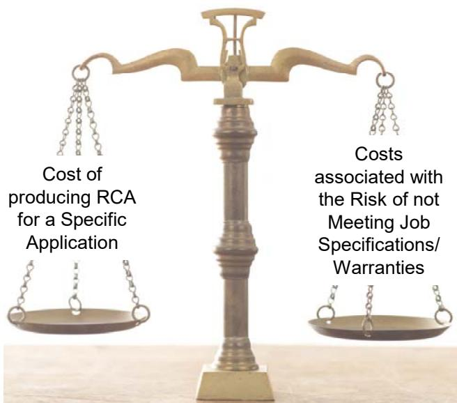

Concrete Pavement Sustainability
Concrete Pavement Sustainability serves as a dedicated research track within the broader field of Sustainability & Emerging Technologies [1]. This domain focuses on quantifying environmental impacts, such as the global warming potential over a 75-year service life, by evaluating materials and practices across design, construction, operation, preservation, rehabilitation, and recycling phases [1]. The practice involves considering all three pillars of sustainability — economic, environmental, and social — in concrete pavement design, construction, operation, preservation, rehabilitation, and recycling. Under the CP Road Map Track 12, sustainability research focuses on reducing life-cycle costs, improving the environmental footprint, and increasing societal benefits [1]. By considering these pillars, the track aims to provide tools and data that reduce life-cycle costs and improve the overall environmental footprint of concrete pavement systems [1]. Life-Cycle Cost Analysis (LCCA) serves as the primary economic evaluation method for assessing total ownership costs, with specific applications in internal curing studies and broader infrastructure decision support. [1], [2] While both entries describe this same analytical framework for comparing pavement alternatives over their service life, they differ in scope by highlighting distinct research contexts such as material performance factors versus software tools and technical documentation. [3], [4]
Sources (18)
Sub-concepts (2)
Overview of CP Road Map Track 12
In Washington state, test sections constructed with flexural strengths of 550 psi, 650 psi, and 900 psi were utilized for truck-only pavements and city street restoration. These tests demonstrated that the 900 psi concrete exhibited minimal wear from studded tires, whereas lower strength sections showed significant wear [5].
Sustainability Assessment and Economic Analysis
Ternary blended cement concrete mixtures can save more than 10,000 tons of carbon dioxide from being emitted into the atmosphere for just 10 miles of a six-lane concrete pavement [6]. Furthermore, ready-mix plants that blend supplementary cementitious materials on-site can recover their investment in additional silos and associated equipment in less than 10,000 cubic yards of concrete [6]. However, increasing cement content beyond the minimum required for strength and durability can negatively impact sustainability by increasing shrinkage risk and internal temperatures during curing [7].

Effect of cement content on concrete compressive strength [7]Regarding economic life-cycle cost analysis (LCCA tools and parameters), life-cycle cost analysis demonstrates that internally cured concrete provides long-term financial benefits through a reduced frequency of rehabilitation work and an extended predicted service life [2]. Environmental life-cycle assessment (LCI databases, LCA toolkit, impact categories) remains a critical component of these evaluations.
Life-Cycle Cost Analysis serves as a primary quantitative framework within Concrete Pavement Sustainability to calculate the Net Present Value of costs associated with a pavement’s design, construction, maintenance, and rehabilitation over its service life [1]. This economic evaluation method is grouped under the broader sustainability track, which considers all three pillars of sustainability—economic, environmental, and social considerations—to reduce life-cycle costs and improve the environmental footprint [1]. By quantifying these characteristics, decision-makers can integrate design, procurement, and maintenance options that account for lower life-cycle costs compared to other pavement types [1].
Lifecycle Cost Analysis serves as an economic evaluation method for Concrete Pavement Sustainability by quantifying long-term sustainability through the aggregation of initial construction costs with future maintenance, rehabilitation, and user delay expenses over a specified analysis period [1]. This analysis period is selected to be sufficiently long to reflect long-term cost differences associated with reasonable design strategies, typically encompassing at least one maintenance or major rehabilitation activity [11]. By optimizing factors such as life-cycle costs alongside initial and future expenditures, this approach allows for the comparison of alternative designs where higher initial investments may result in lower overall expenses [11].
Regarding panel width, widened concrete pavements with 12-foot panels exhibit the lowest overall maintenance costs compared to wider configurations, whereas 15-foot panels incur average maintenance costs that are 1.7 times higher than those of 12-foot panels [8].

Responses from Midwest states based on panel width usage for two-lane, two-way JPCP [8]The use of dowel bars increases initial concrete pavement cost by approximately 7.8%, yet over a 25-year service life, non-doweled pavements incur costs that are approximately 13.1% higher than doweled pavements due to reduced longevity [9].
Deterministic analysis identifies LMC-VE overlay as having the highest agency cost among evaluated alternatives due to high initial construction, while simultaneously yielding the lowest user costs from rapid traffic reopening [10].

Costs of alternatives obtained from the deterministic analysis: (a) agency costs (b) user costs, and (c) total costs [10]An annual average daily traffic (AADT) threshold of 3,300 vehicles determines economic viability for LMC-VE overlays, with total lifecycle costs becoming favorable only when traffic volumes exceed this specific volume [10].

Determining AADT threshold for LMC-VE overlay [10]Net present value calculations for internally cured pavements demonstrate savings between 0.84% and 3.3% compared to conventionally cured alternatives when accounting for improved durability properties [11].
Sensitivity analysis reveals that variations in total construction cost can increase net present value savings by two to five times for thinner pavements, while higher discount rates significantly boost savings for low traffic volume applications [11].
Geotextile separation layers provide lower cost and higher production rates than conventional asphalt separation layers [4], while internal curing enables a one-inch reduction in pavement thickness while maintaining performance, which can potentially decrease initial construction costs by 3.1% despite higher material expenses [11].

10 in. thick conventionally and internally cured pavement [11]Sustainable Design and Construction Practices
Sustainable design procedures incorporate planning tools, long-life design, two-lift construction, and urban precast systems, while construction practices focus on automated monitoring, energy efficiency, and waste/water reduction. These efforts extend to preservation, rehabilitation, and recycling through methods such as in situ recycling and the use of sensors for health monitoring. Regarding specific pavement technologies, the Federal Highway Research Institute of Germany identified a “bimetallic” effect in two-lift pavements where stress intensities arise from bonding between layers with different properties [5]. For example, in France, a two-lift continuous reinforced concrete pavement used a bottom layer greater than 2 inches thick with local limestone aggregates and a top layer approximately 2 inches deep made of harder aggregates to achieve low noise and high friction [5]. Additionally, water-reducing agents can improve workability without adding extra water by neutralizing surface charges on cement particles to free trapped water [7].
 Two-lift paving in Austria (Source: http://www.walter-heilit-vwb.de/english/toechterg/wien.htm) [5]
Two-lift paving in Austria (Source: http://www.walter-heilit-vwb.de/english/toechterg/wien.htm) [5]
Advanced Materials: SCMs and Recycled Aggregates
Efforts regarding materials and mixture proportioning for reduced environmental impact include the use of SCMs, recycled materials, and carbon-sequestering cements. In Austria, regulations require that most site materials be recycled into new paving projects; for example, old jointed reinforced concrete was shattered and crushed to serve as aggregate in an 8.5-inch bottom layer of a two-lift pavement [5]. According to FHWA reports, recycled concrete aggregate (RCA) can exhibit cementitious behavior that allows it to perform better than virgin aggregate in base and subbase applications [12]. However, RCA absorbs water rapidly, with the amount absorbed within the first ten minutes correlating to an average of 65 percent of total absorption for investigated mixes [12], and modifying gradation and abrasion testing methods can achieve a more accurate characterization of recycled concrete aggregate compared to standard test procedures [12].
Furthermore, using supplementary cementitious materials generally improves concrete durability by increasing impermeability, resistance to thermal cracking, and alkali-aggregate expansion [7]. Because the interaction between supplementary cementitious materials varies depending on the specific materials used, optimum combinations must vary with the selection of materials and their relative quantities in the mixture [6].
 ASTM C1012 sulfate mortar expansions of mixtures containing silica fume [6]
ASTM C1012 sulfate mortar expansions of mixtures containing silica fume [6]
Using supplementary cementitious materials can dramatically improve overall performance and lower long-term life-cycle cost if properly utilized to address issues like rapid slump loss [13], and the use of recycled concrete aggregates (RCA) in new concrete paving mixtures can expedite construction schedules and reduce waste hauling costs by sourcing material from existing structures or project sites, though cost-effectiveness depends heavily on proximity to the paving site and supply availability [12].
Concrete overlays provide cost effective, long-life solutions and are 100% recyclable [4], utilizing existing pavements fully as a supporting layer in concrete overlay applications [4].

– US-58 Unbonded Overlay Typical Section [4]Specialized Concrete Mixes: SFSCC and Roller-Compacted Concrete
The performance-based mix proportioning for SFSCC requires mortar flowability targets of an initial flow of 10% and a final flow diameter of 9.5±0.2 inches after 16–18 drops on a standard flow table [14]. Due to reduced coarse aggregate volumes, SFSCC exhibits lower viscosity than conventional pavement concrete, with IBB-rheometer yield torque typically ranging from 3 to 5 N-m and an IBB-slope between 3 and 7.5 N-m-s [14]. Optimal green strength for freshly mixed SFSCC is achieved at a compressive load capacity of 1.3 to 2.5 kPa when the flow diameter measures between 41% and 47% [14]. Furthermore, the addition of nano-clay materials such as Actigel increases yield stress, viscosity, and thixotropy in SFSCC, which accelerates viscosity recovery to control timely shape-holding ability during extrusion [14]. Although material costs are equal to or greater due to increased cementitious content and admixtures, field applications indicate that total costs for SFSCC mixes are comparable to those of conventional fixed form and slip-form pavement concrete [14].
 Mortar flow curve from the loading down curve of SFSCC and a conventional pavement mixture [14]
Mortar flow curve from the loading down curve of SFSCC and a conventional pavement mixture [14]
In the context of roller-compacted concrete, water reducers can save cement costs greatly while significantly reducing the water/binder ratio to enhance durability and pavement life [15]. Additionally, properly selected air-entraining admixture chemistry enables freeze-thaw durability in roller-compacted concrete pavements [15].
Internal Curing and Durability Enhancement
While SFSCC demonstrates higher porosity and rapid chloride ion permeability than conventional pavement concrete at 28 days, these durability metrics become comparable at later ages due to the extensive use of supplementary cementitious materials [14]. Furthermore, under controlled laboratory drying conditions at 23ºC±2ºC and 50%±4% relative humidity, SFSCC exhibits noticeably higher shrinkage than conventional concrete at given ages [14].
To mitigate these issues, internal curing with lightweight fine aggregate (LWFA) reduces autogenous shrinkage and improves durability by providing internal water reservoirs that enhance cement hydration without altering the external water-to-cement ratio [16]. This method of internal curing using lightweight fine aggregate (LWFA) reduces temperature and moisture differentials within concrete slabs, which significantly decreases warping and curling while improving ride quality and reducing the risk of corner breaks [2]. Additionally, the permeability of concrete mixtures containing lightweight fine aggregate is improved, which potentially increases the longevity of pavements by enhancing resistance to environmental attack [2]. Consequently, service life predictions indicate that internal curing concrete can extend structural durability by approximately 20 years relative to conventional concrete decks under identical exposure conditions [16].
Pervious Concrete and Pollutant Abatement
Pervious concrete mixes exhibit varying environmental design features, such as pollutant removal capabilities; specifically, mixes incorporating 15% fly ash or limestone powder as a cement replacement remove approximately 30% of influent naphthalene concentrations, whereas pure Portland cement removes only 10% and slag replaces remove just 0.5% [17]. Furthermore, the permeability coefficients of these mixes range from 340 in./hr for pure Portland cement to 642 in./hr for mixes containing 15% slag, a range that correlates inversely with unit weight and directly with total porosity [17].
 Compressive strength (b) Permeability (PC = Portland cement; FA = fly ash; LS = limestone powder) Figure 11. Effects of porosity on strength and permeability of pervious concrete [17]
Compressive strength (b) Permeability (PC = Portland cement; FA = fly ash; LS = limestone powder) Figure 11. Effects of porosity on strength and permeability of pervious concrete [17]
Regarding the measurement of these properties, total porosity measurements using flatbed scanner methods yield higher values (up to 31.41%) compared to RapidAir methods (up to 24.15%), as the scanner captures larger voids that microscopic imaging misses [17].
Electrically Conductive Concrete (ECON) Systems
To address poor soil conditions classified as AASHTO A-6 and A-7, a two-lift pavement in North Dakota utilized a 6-inch thick bottom layer of econocrete made with locally available aggregate and a 3-inch top lift [5]. Such electrically conductive concrete (ECON) heated pavements utilize ohmic heating to convert electrical energy into thermal energy, achieving an approximate 50% efficiency in converting electricity to heat for snow and ice removal [18]. This technology eliminates the need for deicing salts, thereby preventing water contamination and infrastructure corrosion associated with traditional chemical methods [18].

Small-scale ECON HPS pavement slab preparation [18]Optimal conductivity in ECON is achieved using 0.5-inch-long carbon fibers added in two stages at the job site, with batch sizes limited to 6 cubic yards per truck to prevent fiber clumping and ensure even distribution [18]. Fresh-stage electrical resistance testing on each batch requires measurements for a 14-inch by 4-inch by 4-inch beam with copper mesh electrodes to fall within 4 to 10 ohms [18]. To mitigate electrical shock hazards, ECON systems operate at a recommended voltage of 24 volts alternating current (VAC) using an ungrounded supply system, which remains below the 30 VAC safety limit established by regulatory standards [18]. While a protective paint layer may be applied to the slab surface as an additional safety measure, it cannot serve as the primary electrical barrier due to maintenance requirements [18].
Pavement Design And Construction Strategies
Strip-widening projects, involving the addition of at least 3 feet to existing pavements, offer lifecycle advantages by preserving edge drains and preventing water pooling between the new slab and subgrade without requiring formal pavement thickness analysis [8].
The faster opening-to-traffic time for polymer overlays significantly reduces traffic control expenditures, thereby lowering user costs compared to conventional concrete alternatives [10].
Environmental Impact And Carbon Footprint
Regarding sustainability, Simone Ardoin (Louisiana) stated at the Concrete Pavement Preservation conference last week that reports regarding greenhouse gases and carbon output pertaining to concrete were not good [4]; she suggested looking into these reports, including one done by the National Pavement Preservation Center with Craftco, to see how to improve concrete and sustainability [4].
Benefits and Sustainability Advantages
Craig Hennings stated he was at the conference and heard some of the Colas company report, noting that long life over the life of the project gives a lower carbon footprint per year, which will demonstrate it is a sustainable technology [4].
It was stated that the operational phase of concrete has the most benefit for sustainability [4], particularly as one of HMA’s biggest problems is user (operational) costs and environmental impact from the wheel resistance of the softer surface as compared to PCC [4].
Material Durability And Quality Control
Because RCA does not pass standard sulfate soundness tests using sodium sulfate, modified acceptance limits or the exclusive use of magnesium sulfate in ASTM C88 testing are required to accurately assess durability performance [12].
Limitations, Uncertainties, and Risks
Contractors must account for additional verification testing time and consistency risks when using RCA, as quality control failures can lead to rejected concrete or necessary repairs, thereby increasing the overall lifecycle cost compared to virgin aggregates [12].

Contractor perspective when considering RCA [12]Before geotextiles can be considered as the default preferred solution for unbonded concrete overlays, several questions must be answered more fully [4].
First is the question of the geotextile’s drainage characteristics and how to remove any water that may saturate the geotextile [4].
Economic Modeling And Risk Analysis
Regarding economic modeling, probabilistic analysis reveals that while LMC-VE maintains a lower standard deviation in net present value for agency costs compared to other polymer alternatives, it exhibits higher mean NPV values at equivalent probability levels [10].
Related Pages
- CP Road Map
- CP Road Map Volume II
- Supplementary Cementitious Materials
- Sustainability & Emerging Technologies
- Life-Cycle Cost Analysis
- Lifecycle Cost Analysis
References
- D. Harrington, R. Rasmussen, D. Merritt, T. Cackler, and P. Taylor, "Long-Term Plan for Concrete Pavement Research and Technology—The Concrete Pavement Road Map (Second Generation): Volume II, Tracks (FHWA-HRT-11-070)," National Center for Concrete Pavement Technology, Iowa State University, Ames, IA, 2012. [Online]. Available: https://www.fhwa.dot.gov/publications/research/infrastructure/pavements/pccp/11070/11070.pdf
- A. Daghighi, P. Taylor, H. Ceylan, and Y. Zhang, "Impacts of Internally Cured Concrete Paving on Contraction Joint Spacing Phase II," National Concrete Pavement Technology Center, Iowa State University, Ames, IA, Rep. TR-746, 2021. [Online]. Available: https://www.cptechcenter.org/wp-content/uploads/2021/05/IC_concrete_paving_impacts_phase_II_field_impl_w_cvr.pdf
- W. J. Weiss and L. Montanari, "Guide Specification for Internally Curing Concrete," National Concrete Pavement Technology Center, Ames, IA, Rep. TPF-5(286), 2017. [Online]. Available: https://www.intrans.iastate.edu/wp-content/uploads/2018/09/IC_guide_spec_w_cvr.pdf
- G. Fick and D. Harrington, "Concrete Overlay Field Application Program, Final Report: Volume I," National Concrete Pavement Technology Center, Ames, IA, 2012. [Online]. Available: https://apps.itd.idaho.gov/apps/manuals/Materials/Materials%20References/OverlayFieldAppFinalReport.pdf
- J. K. Cable and D. P. Frentress, "Two-Lift Portland Cement Concrete Pavements to Meet Public Needs," Center for Transportation Research and Education, Iowa State University, Ames, IA, Rep. DTF61-01-X-00042 (Project 8), 2004. [Online]. Available: https://www.intrans.iastate.edu/wp-content/uploads/2020/10/two_lift.pdf
- P. Tikalsky, P. Taylor, S. Hanson, and P. Ghosh, "Development of Performance Properties of Ternary Mixtures: Laboratory Study on Concrete," National Concrete Pavement Technology Center, Ames, IA, Rep. TPF-5(117), 2011. [Online]. Available: https://www.intrans.iastate.edu/research/completed/development-of-performance-properties-of-ternary-mixtures-laboratory-study-on-concrete/
- P. Taylor, F. Bektas, E. Yurdakul, and H. Ceylan, "Optimizing Cementitious Content in Concrete Mixtures for Required Performance," National Concrete Pavement Technology Center, Ames, IA, 2012. [Online]. Available: https://www.intrans.iastate.edu/wp-content/uploads/2018/03/taylor_ocm_w_cvr2.pdf
- H. Ceylan, S. Kim, Y. Zhang, S. Yang, O. Kaya, K. Gopalakrishnan, and P. Taylor, "Prevention of Longitudinal Cracking in Iowa Widened Concrete Pavement," Institute for Transportation, Ames, IA, Rep. TR-700, 2018. [Online]. Available: https://www.intrans.iastate.edu/wp-content/uploads/2018/07/longitudinal_cracking_prevention_in_widened_concrete_pvmt_w_cvr.pdf
- M. L. Porter and R. J. Guinn, Jr., "Synthesis of Dowel Bar Research / Assessment of Dowel Bar Research," Center for Transportation Research and Education (CTRE), Iowa State University, Ames, IA, Rep. HR-1080, 2002. [Online]. Available: https://www.intrans.iastate.edu/wp-content/uploads/2018/03/dowelbarsynthesis.pdf
- K. Wang, B. M. Shankaramurthy, A. Anand, Y. Sargam, K. Freeseman, and B. Phares, "Performance Evaluation of Very Early Strength Latex-Modified Concrete (LMC-VE) Overlay," Institute for Transportation, Iowa State University, Ames, IA, Rep. TR-771, 2024. [Online]. Available: https://bec.iastate.edu/wp-content/uploads/2024/10/performance_evaluation_of_LMC-VE_overlay_w_cvr.pdf
- P. Vosoughi, S. Tritsch, H. Ceylan, and P. Taylor, "Lifecycle Cost Analysis of Internally Cured Jointed Plain Concrete Pavement," National Concrete Pavement Technology Center, Ames, IA, Rep. TR-676, 2017. [Online]. Available: https://publications.iowa.gov/27038/
- S. Garber, R. Rasmussen, T. Cackler, P. Taylor, D. Harrington, G. Fick, M. Snyder, T. Van Dam, and C. Lobo, "A Technology Deployment Plan for the Use of Recycled Concrete Aggregates in Concrete Paving Mixtures," National Concrete Pavement Technology Center, Ames, IA, 2011. [Online]. Available: https://www.intrans.iastate.edu/wp-content/uploads/2018/03/RCA-Draft-Report_final-ssc.pdf
- S. Schlorholtz, "Development of Performance Properties of Ternary Mixes: Scoping Study (Phase 1)," Center for Portland Cement Concrete Pavement Technology, Iowa State University, Ames, IA, Rep. DTFH61-01-X-00042 (Project 13), 2004. [Online]. Available: https://www.cptechcenter.org/wp-content/uploads/2018/03/ternary_mixes.pdf
- K. Wang, S. P. Shah, J. Grove, P. Taylor, P. Wiegand, B. Steffes, G. Lomboy, Z. Quanji, L. Gang, and N. Tregger, "Self-Consolidating Concrete—Applications for Slip-Form Paving: Phase II," National Concrete Pavement Technology Center, Ames, IA, Rep. TPF-5(098), 2011. [Online]. Available: https://www.intrans.iastate.edu/wp-content/uploads/2018/03/SCC_Phase_2_final_report-edited_wcover.pdf
- C. V. Hazaree, H. Ceylan, P. Taylor, K. Gopalakrishnan, K. Wang, and F. Bektas, "Use of Chemical Admixtures in Roller-Compacted Concrete for Pavements," National Concrete Pavement Technology Center, Ames, IA, 2013. [Online]. Available: https://www.intrans.iastate.edu/wp-content/uploads/2018/03/rcc_admixture_w_cvr1.pdf
- P. Taylor, T. Hosteng, X. Wang, and B. Phares, "Evaluation and Testing of a Lightweight Fine Aggregate Concrete Bridge Deck in Buchanan County, Iowa," National Concrete Pavement Technology Center and Bridge Engineering Center, Ames, IA, Rep. TR-648, 2016. [Online]. Available: https://www.intrans.iastate.edu/wp-content/uploads/2018/03/Buchanan_LWFA_bridge_deck_w_cvr.pdf
- S. K. Ong, K. Wang, Y. Ling, and G. Shi, "Pervious Concrete Physical Characteristics and Effectiveness in Stormwater Pollution Reduction," Institute for Transportation, Ames, IA, Rep. DTRT13-G-UTC37, 2016. [Online]. Available: https://www.intrans.iastate.edu/wp-content/uploads/2018/03/pervious_concrete_in_stormwater_pollution_reduction_w_cvr.pdf
- M. L. Rahman, H. Ceylan, S. Kim, P. C. Taylor, and D. King, "Advancing Electrically Heated Pavements for Sustainable Winter Maintenance," PROSPER and National Concrete Pavement Technology Center, Iowa State University, Ames, IA, Rep. HR-3049, 2024. [Online]. Available: https://www.intrans.iastate.edu/wp-content/uploads/2025/03/electrically_heated_pavements_for_sustainable_winter_maintenance_w_cvr.pdf
Feedback on this page